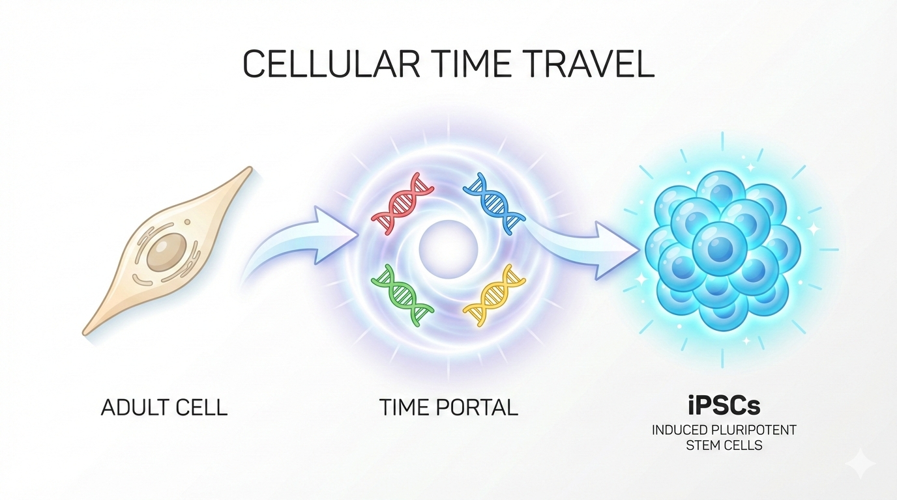

The Time Machine That Changed Biology Forever

I’m currently reading Why We Die by Venki Ramakrishnan, and it got me thinking about one particular type of cell that technically never dies; stem cells. Here’s a mind-bending fact: the stem cells in your body right now are the same stem cells your great-great-great-ancestors had centuries ago. They’ve been passed down through generations, living through thousands of years. In a way, they’re the most immortal part of us.
But what if I told you that in 2006, a scientist figured out how to turn back time? Not in a sci-fi movie way, but in the cells of living organisms. That scientist was Shinya Yamanaka, and his discovery was so revolutionary that it won him a Nobel Prize just six years later.
Today’s paper: “Induction of Pluripotent Stem Cells from Mouse Embryonic and Adult Fibroblast Cultures by Defined Factors” (2006)
Or as I like to call it: The Time Machine! ⏰
The Challenge: Can You Turn Back the Clock?
Here’s the setup. Your body contains about 200 different types of cells—skin cells, muscle cells, nerve cells, and so on. They all started from the same place: embryonic stem (ES) cells. These magical ES cells are like the ultimate “blank slate” that can become anything. They’re pluripotent, meaning they have the potential to become any cell type in your body.
But here’s the catch: once a cell decides what it wants to be when it grows up (a skin cell, say), it’s committed. It’s like choosing your college major—except way more permanent. The cell’s identity gets locked in through complex genetic and chemical changes.
The big question: Could you take an adult cell that’s already made its life choices and somehow convince it to become young again? To go back to being a stem cell?
The Sherlock Holmes Approach
This is where the paper reads like a detective novel! Yamanaka started with 24 suspects, genes known to keep ES cells pluripotent.
The Investigation:
- Round 1: Tested each factor individually → Nothing worked; none of them alone could do the job.
- Round 2: Combined all 24 together → Boom! Got colonies that looked like ES cells
- Round 3: Removed factors one by one → Narrowed down to 10 essential ones
- Round 4: Further elimination → Identified THE FINAL FOUR suspects
Remove any of these four, and you get nothing:
- Oct3/4 – Master regulator of pluripotency
- Sox2 – Oct3/4’s partner
- c-Myc – Powerful transcription factor (up to 25,000 genome binding sites!)
- Klf4 – Represses p53
Just four factors to turn back the cellular clock. Nicknamed as the Yamanaka factors.
Proving It Works
Showing cells look like stem cells isn’t enough. Yamanaka used the gold standard test: inject cells into immunodeficient mice (SCID mice). If truly pluripotent, they form a teratoma; a tumor with tissues from all three germ layers:
- Ectoderm → nervous system, skin
- Mesoderm → muscles, bones
- Endoderm → gut, lungs
The iPS cells passed! They could truly become any cell type.
The Takeaway: Sometimes Simple is Revolutionary
What makes this so beautiful is its simplicity. Not 24 factors. Not 10. Just four. Four transcription factors that could rewrite cellular identity and turn back developmental time. It’s a reminder that sometimes the most elegant solutions are hiding in plain sight, waiting for someone brave enough to test them systematically.
Yamanaka didn’t just discover a technique. He proved that cellular identity is far more flexible than we ever imagined. He showed us that the passage of time, at least at the cellular level, might not be as one-way as we thought.
Every groundbreaking discovery starts with someone’s “what if?”
References
- Takahashi, K., & Yamanaka, S. (2006). Induction of pluripotent stem cells from mouse embryonic and adult fibroblast cultures by defined factors. Cell, 126(4), 663-676. https://doi.org/10.1016/j.cell.2006.07.024
- Induced Pluripotent Stem Cell Experiments - ASU Embryo Project
- Nobel Prize 2012 - Medicine
- Gladstone: Reflecting on a Decade of iPSCs
- AI-generated image. (Gemini)